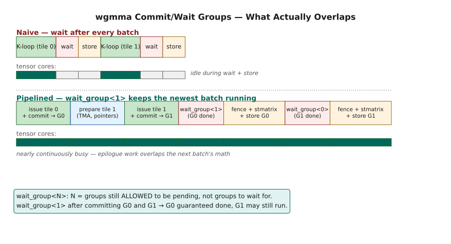
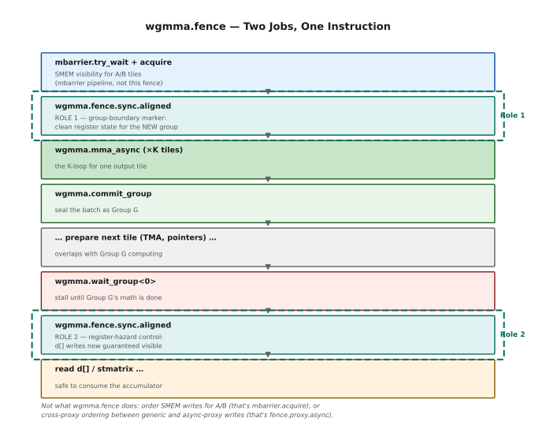
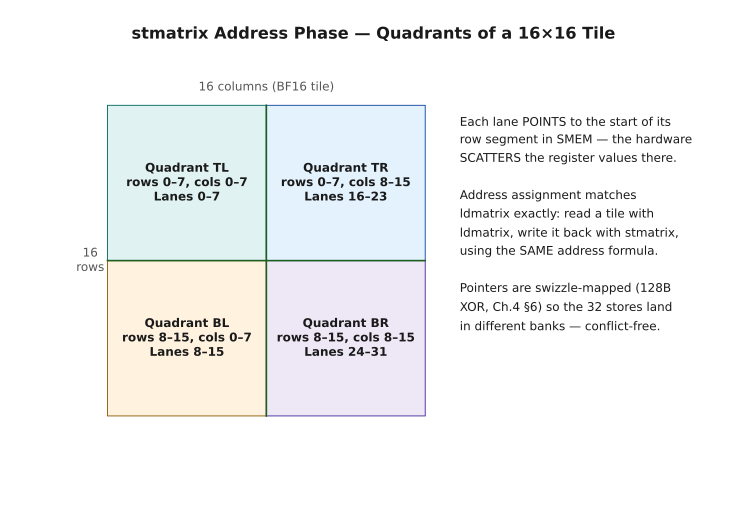
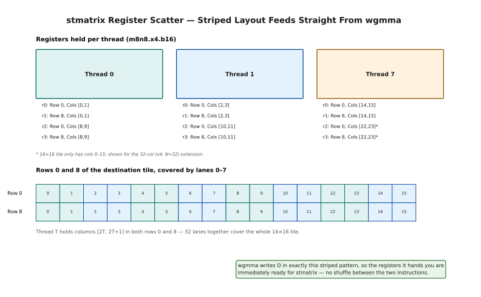
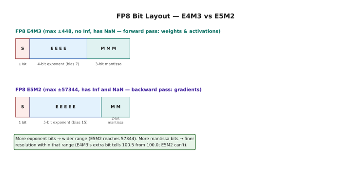
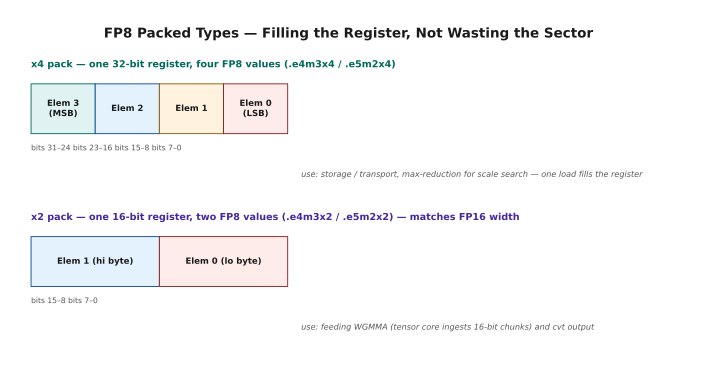
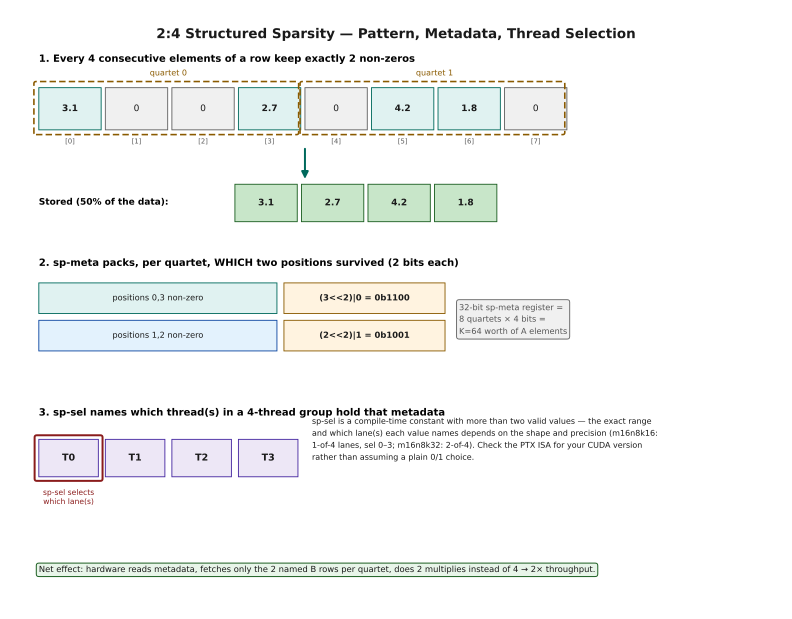

WGMMA Part 2 — Groups, stmatrix, FP8 & Sparse¶
Lesson 7 Companion Guide — Programming the H100¶
Verified on: CUDA 12.x + Hopper GPU (sm_90a). Compile CUDA examples with:
nvcc -std=c++17 -arch=sm_90a -O2 <file>.cu -o <out>Run with:./<out>on any H100 or B200 instance.
What this covers: Everything from Lesson 7 — commit/wait group mechanics for overlapping wgmma with data preparation (the pipeline-friendly API), wgmma.fence dual roles (group boundary + register hazard control), stmatrix for cooperative accumulator writeback (address phase, register layout, x1/x2/x4 variants, FP32 vs FP16 accumulator paths), the FP8 paradigm shift (E4M3 vs E5M2 formats, scaling factors, packed types e4m3x2/x4, the cvt.satfinite quantization instruction, K-major layout requirement, precision pitfalls with large K), and Sparse WGMMA (2:4 structured sparsity, sp-meta register, sp-sel thread selector, metadata packing for FP16/BF16/FP8/TF32). Every section includes ASCII diagrams, manual worked examples with concrete numbers, and compileable code with full test harnesses.
How to read this chapter. Chapter 6 got a single wgmma instruction to
issue correctly. This one is about everything that turns that instruction into a
fast kernel — and about the two ways Hopper lets you go faster still.
There are four independent parts, and they can be read in any order. Sections
1–5 are about pipelining: commit and wait groups, and what actually overlaps
with what. Sections 6–8 are about the epilogue — getting results out of the
accumulator registers and back into shared memory with stmatrix. Sections 9–14
are about FP8, which is less a data type than a small numerical discipline
you have to adopt. Sections 15–17 are about structured sparsity.
If you are here to make an existing wgmma kernel faster, read §1–§5. If you are here because your epilogue is transposing your matrix, read §6–§8. If you are here for FP8, start at §9 and read straight through to §14 — especially §14, which documents a hardware behaviour that is not in the official numbers.
★ BEFORE YOU START — Hardware, Setup & Installation¶
Same requirements as Chapter 6: Hopper or later, compiled for sm_90a. The FP8
and sparse sections have no pre-Hopper equivalent at all. Skip ahead if you
already have a machine set up.
What Hardware Can You Use?¶
sm_90a or sm_100a. The trailing a matters — without it the wgmma
instructions are silently unavailable.
Hardware Compatibility Matrix
══════════════════════════════════════════════════════════════════════
Architecture Chip SM Target Example GPUs Lesson 7 Features
──────────────────────────────────────────────────────────────────────────────
Ampere GA100 sm_80 A100 (AWS p4d, Lambda) NONE (no wgmma)
Hopper GH100 sm_90a H100 (AWS p5, Lambda) ALL sections ★
Blackwell GB100 sm_100a B100/B200 ALL + FP8 ldmatrix
KEY:
wgmma commit/wait groups → sm_90a or sm_100a ONLY
stmatrix (.b16, 16-bit) → sm_90a or sm_100a ONLY
FP8 wgmma (e4m3/e5m2) → sm_90a or sm_100a ONLY
Sparse wgmma → sm_90a or sm_100a ONLY
ldmatrix for plain FP8 → NOT available on ANY current architecture
IMPORTANT FP8 LOADING NOTE (corrected — see §13.2):
ldmatrix has no variant for ordinary 8-bit e4m3/e5m2 FP8, on Hopper OR
Blackwell. Its only documented element types are .b16 (sm_75+, i.e. all
the way back to Turing) and two Blackwell-only *sub-byte* packed forms
(.b8x16.b6x16_p32 / .b8x16.b4x16_p64, sm_100a/sm_110a) built for the
6-bit/4-bit microscaling (MX) formats used by 5th-gen tensor cores
(tcgen05) — a different feature from plain FP8, not a faster path to it.
On every architecture that has FP8 wgmma, FP8 A tiles load via the SS
(descriptor) path or manual ld.shared.b32 (RS path). There is no
ldmatrix shortcut for FP8 to look forward to on Blackwell either.
Cloud GPU Rental — Lambda Labs¶
Usually the cheapest hourly H100.
Lambda Labs Setup (H100)
══════════════════════════════════════════════════════════════════════
1. https://lambdalabs.com/ → sign up → Launch Instance
2. Choose "1x H100 PCIe" (cheapest for learning)
3. SSH: ssh -i ~/.ssh/your_key ubuntu@<INSTANCE_IP>
4. Verify: nvcc --version && nvidia-smi
5. Compile: nvcc -std=c++17 -arch=sm_90a -O2 file.cu -o out && ./out
Cloud GPU Rental — AWS¶
p5 is the H100 family. p4d is A100 and cannot run this chapter.
AWS p5 Setup (H100)
══════════════════════════════════════════════════════════════════════
Instance: p5.48xlarge (8× H100 SXM5)
AMI: "Deep Learning AMI GPU PyTorch" (Ubuntu 22.04)
ssh -i key.pem ubuntu@<IP> && source activate pytorch
nvcc --version && nvidia-smi
A100 (p4d): use sm_80. Nothing in this lesson compiles on sm_80.
Hopper vs Blackwell — What Changes¶
Read once if you are on Blackwell. Everything here still runs; Blackwell simply adds a newer tensor core generation alongside it.
Hopper (sm_90a) vs Blackwell (sm_100a) — Lesson 7 Differences
══════════════════════════════════════════════════════════════════════
WHAT STAYS IDENTICAL on Blackwell:
├── commit_group / wait_group semantics and syntax
├── wgmma.fence.sync.aligned roles and placement rules
├── stmatrix variants (x1, x2, x4, b16, b8) — same syntax
├── FP8 instruction shapes (m64nNk32), scale operands
├── FP8 packed types (e4m3x2/x4, e5m2x2/x4) and cvt.satfinite
├── Sparse wgmma (sp-meta, sp-sel, 2:4 sparsity) — same rules
└── All code in this guide compiles and runs unchanged on sm_100a
WHAT IS NEW IN BLACKWELL:
├── ldmatrix sub-byte variants (.b8x16.b6x16_p32 / .b4x16_p64) for the
│ MX (microscaling) 4-bit/6-bit formats — NOT a plain-FP8 path; ordinary
│ e4m3/e5m2 A tiles still load via SS/descriptor or manual ld.shared,
│ same as on Hopper (see §13.2)
├── tcgen05.mma: 5th-gen tensor core instruction (separate from wgmma)
├── FP4 (MX format) support in tcgen05
└── tmem (tensor memory) as accumulator location for tcgen05
PORTING: Change -arch=sm_90a to -arch=sm_100a for Blackwell.
Table of Contents¶
- WGMMA Groups — Why Grouping Exists
- wgmma.commit_group — Closing a Batch
- wgmma.wait_group — The Synchronization Point
- The Commit/Wait Pipeline — What Actually Overlaps
- wgmma.fence — Dual Role Review
- stmatrix — Writing Accumulators Back to SMEM
- stmatrix — Address and Register Phases
- stmatrix and FP32 Accumulators — The Conversion Requirement
- FP8 — The Paradigm Shift
- FP8 Formats — E4M3 vs E5M2
- FP8 Packed Types — e4m3x2/x4 and e5m2x2/x4
- FP8 Quantization — cvt.satfinite
- FP8 WGMMA — Instruction and Layout Rules
- FP8 Precision Pitfalls — K-Slicing
- Sparse WGMMA — 2:4 Structured Sparsity
- sp-meta — The Metadata Register
- sp-sel — The Thread Selector
- Putting It All Together — Full Examples
- Quick Reference
1 — WGMMA Groups¶
Chapter 6 §5 made the essential point: wgmma.mma_async returns immediately and
leaves the tensor cores working in the background. This section asks the obvious
follow-up — how do you find out when they're done?
The answer is not "wait for instruction number seven." The hardware does not track individual wgmma instructions; it tracks batches of them. You draw a line under a set of instructions, and then you wait on the batch.
That indirection is what makes deep pipelining possible, and it is what §2 and §3 are about.
1.1 Why Grouping Exists — The Tracking Problem¶
wgmma.mma_async launches tensor core operations asynchronously — each call puts a matrix multiply "in flight" and returns immediately. This is great for latency hiding, but it creates a bookkeeping challenge: how do you know when a specific set of wgmma operations is done?
If the hardware had to track each individual wgmma separately, the scoreboard overhead would be enormous. And if you had to wait for every single wgmma individually, you would lose all the overlap benefit. The solution is grouping: batch several wgmma calls into a named group, then wait for entire groups rather than individual operations.
This is the same design philosophy as cp.async.bulk.commit_group / cp.async.bulk.wait_group from Lesson 5 — but for math instead of memory operations.
The Tracking Problem — Why Individual Wait Would Be Slow
══════════════════════════════════════════════════════════════════════
Scenario: Computing a 64×256 output tile requires 8 wgmma calls
(each wgmma handles 64×32, and 256/32 = 8 calls).
WITHOUT grouping (hypothetical "wait for each"):
─────────────────────────────────────────────────────────────────
wgmma call 0 → WAIT → wgmma call 1 → WAIT → wgmma call 2 → ...
All sequential. No overlap. Tensor core idle between waits.
Time = 8 × (wgmma latency + wait overhead). Slow.
WITH grouping (commit + wait N):
─────────────────────────────────────────────────────────────────
wgmma call 0 }
wgmma call 1 } → commit_group → Group 0
wgmma call 2 }
...
wgmma call 7 }
While Group 0 is computing, prepare data for Group 1:
→ TMA load next tiles
→ Update pointers, compute indices
→ Stage next SMEM buffer
Group 0 finishes in background.
wgmma call 8 }
wgmma call 9 } → commit_group → Group 1
...
wgmma call 15 }
wait_group<1>: wait until Group 0 done (Group 1 still running in background)
Read Group 0 accumulators, write back.
wait_group<0>: wait for Group 1.
Read Group 1 accumulators.
Total time = max(compute + overhead) vs sequential sum. Much faster.
─── The Pipeline-Friendly Granularity ───────────────────────────
Groups give you exactly the right level of control:
├── Too fine-grained (individual wgmma): too much overhead to track
├── Too coarse-grained (wait for all): no overlap possible
└── Groups (batches of wgmma): overlap preparation of N+1 with
computation of N. Goldilocks.
2 — wgmma.commit_group¶
The instruction that draws the line. Everything issued since the last
commit_group becomes one countable batch.
It does not wait, it does not synchronise, and it costs essentially nothing — it is pure bookkeeping. The mental model that helps: you are pushing a marker onto a queue.
2.1 What commit_group Does¶
wgmma.commit_group.sync.aligned closes the currently open batch of wgmma operations and makes them trackable as a single named unit (a "group"). Any wgmma.mma_async calls issued AFTER this point belong to the NEXT group.
wgmma.commit_group — Mechanics
══════════════════════════════════════════════════════════════════════
PTX: wgmma.commit_group.sync.aligned;
What it does:
├── Takes all uncommitted wgmma.mma_async calls since the last commit_group
├── Seals them as "Group N" (where N is an implicit counter)
├── Registers Group N with the hardware's scoreboard
├── Future wgmma.mma_async calls go into Group N+1 (automatically)
└── Returns immediately — does NOT wait for Group N to complete
What it does NOT do:
├── Does NOT stall threads
├── Does NOT wait for any math to complete
└── Does NOT flush or synchronize SMEM
─── Group Numbering ─────────────────────────────────────────────
Groups are tracked implicitly (no explicit ID you choose).
The hardware maintains an internal counter of committed-but-pending groups.
wait_group<N> says "wait until the counter is ≤ N" not "wait for group #N".
─── When to Commit ──────────────────────────────────────────────
Commit after you have issued all the wgmma calls for ONE logical tile
of output. Typical pattern:
// All wgmma calls for output tile at (block_m, block_n):
wgmma.mma_async ... // K tile 0
wgmma.mma_async ... // K tile 1
wgmma.mma_async ... // K tile 2
wgmma.mma_async ... // K tile 3 (all K tiles for this output tile)
wgmma.commit_group.sync.aligned; // ← seal this output tile as one group
Now prepare the NEXT output tile's data while this group runs:
- TMA load for next A and B tiles
- Update smem buffer pointers
- Advance loop counters
─── Multiple Groups In-Flight ───────────────────────────────────
The hardware can track multiple committed groups simultaneously.
You can have groups 0, 1, 2 all computing at the same time.
This enables deep pipelining:
Group 0: wgmma computing output tile (0,0)
Group 1: wgmma computing output tile (0,1)
Group 2: wgmma computing output tile (0,2)
All running concurrently — tensor cores continuously busy.
3 — wgmma.wait_group¶
The other half, and the one with the counter-intuitive argument.
wgmma.wait_group<N> waits until at most N groups remain outstanding — not
until N groups have completed. So wait_group<0> means "wait for everything",
and wait_group<1> means "let one batch stay in flight."
That second form is the whole point. Keeping one group running while you prepare the next is how you stop the tensor cores from ever going idle, and picking N is the main tuning knob in a wgmma kernel.
3.1 What wait_group Does¶
wgmma.wait_group.sync.aligned N is the synchronization point. It stalls the thread until the number of still-pending committed groups drops to N or fewer. This gives precise control over how many groups can be "in flight" at once.
wgmma.wait_group — The Synchronization Point
══════════════════════════════════════════════════════════════════════
PTX: wgmma.wait_group.sync.aligned N;
Semantics: "Stall this thread until there are at most N committed
wgmma groups still pending (not yet complete)."
─── Key Values of N ─────────────────────────────────────────────
N = 0 → Wait for EVERYTHING to finish.
All committed groups must be complete before proceeding.
Use when: you are about to read the final result from D registers
and write it to global memory (epilogue).
This is the "drain" point — ensures all math is done.
N = 1 → Wait until only 1 group is still pending.
The most recent group may still be running.
All OLDER groups are guaranteed complete.
Use when: you want to pipeline — let the newest group keep computing
while you read and store the result of the completed older groups.
N = K (any positive value) → Keep K groups running in background.
Useful for deep pipelining where you overlap multiple in-flight groups.
Requires careful management to avoid overwriting active accumulator registers.
─── Manual Worked Example: N=1 for Pipelining ───────────────────
State before wait: Groups 0, 1, 2 all committed and pending.
wgmma.wait_group.sync.aligned 1;
After wait: Exactly 1 group remains pending.
Which one? The MOST RECENTLY committed group (Group 2).
Groups 0 and 1 are DONE.
What you can now safely do:
├── Read D registers for Group 0's output — they are final ✓
├── Write Group 0's result to global memory via stmatrix ✓
└── Keep Group 2 running in the background ✓ (it's the 1 permitted)
What you CANNOT do:
└── Read D registers for Group 2's output — it's still computing! ✗
─── wait_group Implicit Fence ───────────────────────────────────
Like cp.async.bulk.wait_group, wgmma.wait_group includes an implicit
ordering fence. After it returns, all accumulator writes from the
completed groups are visible to the reading threads.
No separate wgmma.fence is needed after wait_group for register reads
— wait_group itself acts as the final ordering point.
(But you DO need wgmma.fence before the NEXT wgmma.mma_async call
if you are starting a new sequence in the same warp group.)
4 — The Commit/Wait Pipeline — What Actually Overlaps¶
It is easy to write a commit/wait pipeline that looks right and overlaps nothing. This section is about telling the two apart.
The question to keep asking is: between issuing the math and waiting for it,
what work is there that does not touch the accumulator registers? Loading the
next tile qualifies. Computing the next set of descriptors qualifies. Reading
D does not — that is exactly what you are waiting for.
The timeline diagrams here are worth the time; they show where the cycles actually go.
4.1 The Complete Overlap Pattern¶
The real power of groups becomes clear when you see the full pipeline. The key insight is that you are not just "commit then wait" — you are interleaving math, data preparation, and synchronization so that tensor cores are never idle.

Naive wait-after-every-batch leaves the tensor cores idle during every wait and store; wait_group<1> keeps the newest batch running while the completed one's epilogue proceeds.
The Pipelined wgmma Pattern — Complete Timeline
══════════════════════════════════════════════════════════════════════
Notation: [W] = wgmma.mma_async call, [C] = commit_group, [P] = wait
Naive (no pipelining):
─────────────────────────────────────────────────────────────────
[W][W][W][W] [C] [wait 0] [store] [W][W][W][W] [C] [wait 0] [store] ...
K-loop epilogue K-loop epilogue
Tensor cores: ████░░░░████░░░░ (idle during wait and store)
Pipelined (overlap math with store):
─────────────────────────────────────────────────────────────────
Outer loop over output tiles (tile_m, tile_n):
// Issue ALL wgmma for tile (m, n):
for each K tile:
wgmma.mma_async ... // K tiles for (m,n)
wgmma.commit_group; // → Group G
// Start preparing NEXT tile's data (while Group G runs):
TMA load A, B for (m, n+1) // async, hardware runs it
Update pointers, addresses
[optional] TMA load for (m, n+2) as well
// wgmma for NEXT tile:
for each K tile:
wgmma.mma_async ... // K tiles for (m, n+1)
wgmma.commit_group; // → Group G+1
// DRAIN: wait for Group G (older one is done, G+1 may still run):
wgmma.wait_group 1; // ← wait until ≤ 1 group pending
// Group G is guaranteed done
// Group G+1 may still run
// Epilogue for tile (m, n) — Group G's results are ready:
wgmma.fence.sync.aligned;
stmatrix → smem, then TMA store smem → global
// Now drain Group G+1:
wgmma.wait_group 0;
wgmma.fence.sync.aligned;
stmatrix → smem, TMA store ...
Tensor cores: ████████████████████ (nearly continuously busy!)
Epilogue work: ░░░░░░[store]░░░░[store] (overlapped with math!)
─── The Five-Step Rhythm ────────────────────────────────────────
Step 1: Issue a set of wgmma for one tile (K-loop)
Step 2: wgmma.commit_group → seal as Group G
Step 3: Prepare next tile (TMA, pointer math — while G runs!)
Step 4: wgmma.wait_group N → wait for older groups (keep newest running)
Step 5: wgmma.fence + stmatrix + store → epilogue for completed group
→ Repeat from Step 1 with next tile.
5 — wgmma.fence — Dual Role Review¶
wgmma.fence has appeared several times now, in slightly different roles, so
this section consolidates it.
It does two distinct jobs. It marks a group boundary — the point where one batch of wgmma instructions ends. And it controls register hazards — telling the hardware that your threads have finished writing the accumulator registers the tensor core is about to claim.
Most misplaced fences come from thinking about only one of those jobs at a time. Read this before you go debugging a pipeline that produces intermittently wrong results.
5.1 The Two Things wgmma.fence Controls¶
At this point in the course you have seen wgmma.fence appear in multiple contexts. It is worth consolidating exactly what it does and does not do, because the confusion between its roles causes hard-to-debug bugs.

The same instruction, two placements: once before the first wgmma of a new group (Role 1), once after wait_group<0> and before reading d[] (Role 2).
wgmma.fence.sync.aligned — Complete Role Summary
══════════════════════════════════════════════════════════════════════
PTX: wgmma.fence.sync.aligned;
─── ROLE 1: Group Boundary Marker ──────────────────────────────
wgmma.mma_async operations are issued in groups (see §1-4).
The fence establishes the START of a new group's issuance window.
Specifically: it tells hardware that any prior wgmma writes to
accumulator registers are complete before the NEXT wgmma reads them.
Placement: Before the FIRST wgmma.mma_async in any sequence.
Effect: Ensures the hardware starts the new group with clean register state.
─── ROLE 2: Register Hazard Control ─────────────────────────────
wgmma.mma_async is asynchronous at the register level. The result
in accumulator registers d[] is NOT instantly available — the hardware
pipeline writes it after some cycles. If you try to read d[] or pass
it to another wgmma before the previous wgmma has committed its write,
you get stale or wrong values.
wgmma.fence prevents this hazard:
- Ensures prior wgmma writes to accumulator registers are visible
- Prevents reordering of wgmma register accesses by the hardware pipeline
- Applies to BOTH accumulator registers AND A-fragment registers (if A is in regs)
Placement: After the LAST wgmma.mma_async, before reading d[].
Effect: Makes the completed accumulator values in d[] safe to read.
─── What wgmma.fence Does NOT Do ─────────────────────────────────
Does NOT order SMEM writes for matrix operands:
If TMA wrote A/B tiles to SMEM and you want wgmma to see those writes,
use mbarrier.try_wait.acquire (from the mbarrier pipeline, Lesson 3).
That acquire fence handles the SMEM visibility, not wgmma.fence.
Does NOT order cross-proxy operations:
If threads wrote to SMEM (Generic Proxy) and wgmma reads SMEM (Async Proxy),
use fence.proxy.async for proper cross-proxy ordering.
wgmma.fence is for register ordering within the warpgroup pipeline only.
─── Placement Rules Summary ─────────────────────────────────────
┌──────────────────────────────────────────────────────────────┐
│ │
│ [mbarrier wait + acquire] ← SMEM visibility │
│ wgmma.fence.sync.aligned ← REGISTER ordering (before) │
│ wgmma.mma_async ... │
│ wgmma.mma_async ... ← one tile's K-loop │
│ wgmma.mma_async ... │
│ wgmma.commit_group │
│ ... (prepare next tile) ... │
│ wgmma.wait_group<0> ← wait for all to complete │
│ wgmma.fence.sync.aligned ← REGISTER ordering (after) │
│ read d[] / stmatrix ... ← safe to access results │
│ │
└──────────────────────────────────────────────────────────────┘
6 — stmatrix — Writing Accumulators Back to SMEM¶
The epilogue problem, stated plainly.
When wait_group<0> returns, your answer exists — scattered across 128 threads'
registers in a layout the hardware chose. Getting it into shared memory as a
coherent tile with ordinary stores would mean every thread computing an
irregular address, and 128 threads colliding on 32 memory banks while they do
it.
stmatrix is the hardware's answer: threads hand over registers, the hardware
works out where each element belongs. It is ldmatrix (Chapter 6, §9) run
backwards, deliberately so.
6.1 Why stmatrix Exists — The Scatter Problem¶
After wgmma.wait_group<0> completes, the D matrix elements are scattered across 128 threads' registers in the hardware-defined wgmma output layout. This layout is highly non-contiguous — each thread holds elements from multiple non-adjacent rows and columns.
Writing these back to SMEM with normal st.shared instructions would be a nightmare: each thread would need to compute complex, non-linear addresses to place its register values in the right SMEM locations. And even then, the result might have bank conflicts.
stmatrix is the inverse of ldmatrix. Just as ldmatrix gathered data from SMEM into the exact register layout that wgmma expects, stmatrix scatters the wgmma output from registers back into SMEM in a clean, contiguous, conflict-free layout.
stmatrix — The Scatter Operation
══════════════════════════════════════════════════════════════════════
Problem: wgmma output in registers is NON-CONTIGUOUS.
─────────────────────────────────────────────────────────────────
Thread 0 holds: D[0][0], D[0][1], D[8][0], D[8][1] (non-adjacent rows!)
Thread 1 holds: D[0][2], D[0][3], D[8][2], D[8][3]
Thread 2 holds: D[0][4], D[0][5], D[8][4], D[8][5]
...
Thread 31 holds: D[7][14], D[7][15], D[15][14], D[15][15]
If Thread 0 used st.shared at addresses [row=0,col=0] and [row=0,col=1]:
fine for those two, but [row=8,col=0] requires a completely different address.
And the address calculation requires knowing the full wgmma layout — complex!
stmatrix Solution:
─────────────────────────────────────────────────────────────────
├── Every thread provides a SMEM destination address (Phase 1)
├── Every thread provides its register values (Phase 2)
├── Hardware SCATTERS registers to the SMEM addresses, reordering as needed
├── Result in SMEM: CONTIGUOUS, row-major matrix tile ✓
└── Hardware applies the SAME address-provision pattern as ldmatrix (decoupled)
The data provider and address provider are DECOUPLED:
Thread 0 provides an address, but that might not be where Thread 0's data lands.
The hardware internally routes the right data to the right address.
This is the exact inverse symmetry of ldmatrix.
stmatrix instruction:
stmatrix.sync.aligned.m8n8.x4.shared.b16 [smem_addr], {r0, r1, r2, r3};
Qualifiers:
─────────────────────────────────────────────────────────────────
.sync: All 32 lanes must reach this instruction together.
Hardware needs all threads' addresses and data simultaneously.
.aligned: All threads in the warp are at the same PC (programmer assertion).
.m8n8: The atomic unit: one 8×8 tile of 16-bit elements.
.x1/.x2/.x4: How many 8×8 matrices to store per call.
.shared: Destination is always Shared Memory (not global).
.b16: 16-bit elements (BF16 or FP16 packed as .b32 pairs).
.b8: 8-bit elements (for INT8; also Blackwell FP8 output).
7 — stmatrix — Address and Register Phases¶
Like ldmatrix, stmatrix runs in two phases — and they are the same two
phases, which is the useful part.
§7.1 covers the address phase: which threads supply addresses, and what those addresses mean. §7.2 covers the register phase: the striped layout each thread's registers must be in.
The symmetry with ldmatrix is intentional and worth leaning on. If you can
read a tile in with one, you can write it out with the other using the same
address arithmetic.
7.1 Phase 1: Address Responsibility¶
The address assignment in stmatrix follows the SAME pattern as ldmatrix. This symmetry is intentional — if you read with ldmatrix and write with stmatrix using the same address formula, the data is correctly reconstructed.

Lanes 0-7, 8-15, 16-23 and 24-31 each point into one quadrant — the same quadrant-to-lane mapping ldmatrix used to read the tile in.
stmatrix Address Phase — Who Points Where
══════════════════════════════════════════════════════════════════════
For stmatrix.m8n8.x4 (four 8×8 tiles = one 16×16 tile):
The 32 lanes are split into groups based on which QUADRANT they handle:
┌──────────────────┬──────────────────┐
│ Quadrant TL │ Quadrant TR │ Top half (rows 0-7)
│ (rows 0-7, │ (rows 0-7, │
│ cols 0-7) │ cols 8-15) │
├──────────────────┼──────────────────┤
│ Quadrant BL │ Quadrant BR │ Bottom half (rows 8-15)
│ (rows 8-15, │ (rows 8-15, │
│ cols 0-7) │ cols 8-15) │
└──────────────────┴──────────────────┘
Address assignment (matches ldmatrix exactly):
Lanes 0-7: point to rows 0-7 of the LEFT HALF (TL quadrant, cols 0-7)
Lanes 8-15: point to rows 8-15 of the LEFT HALF (BL quadrant, cols 0-7)
Lanes 16-23: point to rows 0-7 of the RIGHT HALF (TR quadrant, cols 8-15)
Lanes 24-31: point to rows 8-15 of the RIGHT HALF (BR quadrant, cols 8-15)
Each lane points to the START of its row segment in SMEM.
The hardware writes 16 bytes (one 8×16-bit row) starting from each pointer.
Because the pointers are swizzle-mapped (same formula as ldmatrix),
the stores land in different banks → conflict-free.
─── Manual Worked Example ───────────────────────────────────────
Storing a 16×16 BF16 tile (256 elements = 512 bytes) to SMEM:
int warp = threadIdx.x >> 5; // 0..3 in warpgroup
int lane = threadIdx.x & 31; // 0..31 within warp
int w_in_wg = warp & 3;
int m_base = w_in_wg * 16; // row offset for this warp (0,16,32,48)
// Same formula as ldmatrix:
int row_in_16 = lane & 15; // which row in our 16-row slice
int col_half = lane >> 4; // 0=left 8 cols, 1=right 8 cols
int col_in_16 = col_half * 8; // 0 or 8
int global_row = m_base + row_in_16;
int global_col = n_block + col_in_16; // n_block = start column of N tile
// Linear SMEM offset:
int linear_off = global_row * SMEM_PITCH + global_col * sizeof(__nv_bfloat16);
// Apply 128B swizzle:
int mask = ((linear_off >> 7) & 0x7) << 4;
uint32_t smem_ptr = (smem_base + linear_off) ^ mask;
// Issue stmatrix:
asm volatile(
"stmatrix.sync.aligned.m8n8.x4.shared.b16 [%0], {%1,%2,%3,%4};\n"
: : "r"(smem_ptr), "r"(r0), "r"(r1), "r"(r2), "r"(r3)
);
7.2 Phase 2: Register Source Layout¶
The register layout for stmatrix is the "striped" layout — each thread owns non-contiguous elements across the tile. This is the exact layout that wgmma writes to, so you can feed wgmma output registers directly to stmatrix with no shuffling.

Thread T holds columns [2T, 2T+1] in rows 0 and 8 — the same striped pattern wgmma already wrote its output in, so no shuffle sits between the two instructions.
stmatrix Register Source — The Striped Layout
══════════════════════════════════════════════════════════════════════
For stmatrix.m8n8.x4.b16, each thread holds 4 registers (r0,r1,r2,r3).
Each register holds 2 BF16 values packed as a .b32.
Thread 0's register mapping (for a 16×16 BF16 tile):
─────────────────────────────────────────────────────────────────
r0: Quadrant TL (rows 0-7, cols 0-7) → Row 0, Cols [0,1]
r1: Quadrant BL (rows 8-15, cols 0-7) → Row 8, Cols [0,1]
r2: Quadrant TR (rows 0-7, cols 8-15) → Row 0, Cols [8,9]
r3: Quadrant BR (rows 8-15, cols 8-15) → Row 8, Cols [8,9]
Thread 1's register mapping:
r0 → Row 0, Cols [2,3] (next pair in same row)
r1 → Row 8, Cols [2,3]
r2 → Row 0, Cols [10,11]
r3 → Row 8, Cols [10,11]
Pattern: Thread T holds columns [2T, 2T+1] in rows 0 and 8.
After all 32 threads: rows 0 and 8 are completely covered.
Threads 0-31 together cover the entire 16×16 tile.
─── Why This Matches wgmma Output ──────────────────────────────
wgmma writes its D matrix in exactly this striped pattern.
So the registers you get from wgmma are IMMEDIATELY ready for stmatrix.
No shuffle or rearrangement needed between wgmma and stmatrix.
The pipeline is:
wgmma writes {r0,r1,r2,r3} per thread in striped layout
stmatrix reads {r0,r1,r2,r3} → writes to SMEM in row-major order
Both use the same register layout → no conversion needed ✓
─── The Serialization Loop (for large N) ─────────────────────────
For m64n128k16 (N=128): the accumulator for one output tile requires
many more than 4 registers per thread. Specifically: (64×128)/128 = 64 regs.
stmatrix.x4 only handles 4 registers per call (16×16 elements).
So you need a LOOP over "slices" of the accumulator:
For i = 0, 1, 2, 3 ... (number of 16×16 slices = N/16):
Extract d[slice_start .. slice_start+3] into {r0,r1,r2,r3}
stmatrix [smem_ptr_for_this_slice], {r0,r1,r2,r3}
Advance smem_ptr by 16 columns × sizeof(BF16) = 32 bytes
For N=128: 128/16 = 8 stmatrix.x4 calls.
For N=256: 256/16 = 16 stmatrix.x4 calls.
This loop is the epilogue "serialization loop" mentioned in many CUTLASS kernels.
8 — stmatrix and FP32 Accumulators — The Conversion Requirement¶
And here is the catch that trips up every first epilogue.
stmatrix handles 16-bit and 8-bit elements. It has no 32-bit form. But your
accumulator is FP32, because that is what wgmma accumulates in. So the two do
not connect directly — you must convert down to BF16 or FP16 first, in
registers, before stmatrix will take your data.
That is usually fine, since you probably wanted to store BF16 anyway. But it has to be a deliberate step in your epilogue, and the section covers what the conversion costs and where to put it.
8.1 The FP32 Problem — stmatrix Only Supports 16-bit¶
stmatrix only supports .b16 (16-bit) and .b8 (8-bit) element types. It has no .b32 (32-bit) variant. This creates a critical divergence in the epilogue path depending on whether your wgmma used FP32 or FP16 accumulators.
stmatrix and FP32 — The Conversion Requirement
══════════════════════════════════════════════════════════════════════
CASE A: FP16 Accumulator (.f16 output from wgmma)
─────────────────────────────────────────────────────────────────
wgmma output: packed .f16x2 values already in .b32 registers.
Each register: [FP16_element_N+1 | FP16_element_N] packed 32-bit.
stmatrix expects .b16 → treats the .b32 as two 16-bit chunks.
PIPELINE:
wgmma → d[] contains FP16x2 in .b32 registers
stmatrix.m8n8.x4.b16 [smem], {r0,r1,r2,r3} ← feeds directly!
No conversion needed. Clean and fast.
CASE B: FP32 Accumulator (.f32 output from wgmma) — REQUIRES CONVERSION
─────────────────────────────────────────────────────────────────
wgmma output: individual .f32 values in registers.
stmatrix has NO .f32 variant — cannot feed .f32 directly!
You must convert (downcast) from FP32 to FP16 before stmatrix.
Step 1: Pack two adjacent FP32 values into a .f16x2 register:
// Convert d[0] and d[1] from FP32 to FP16, pack into one register
uint32_t packed;
asm("cvt.rn.f16x2.f32 %0, %1, %2;" : "=r"(packed) : "f"(d[1]), "f"(d[0]));
// packed = [FP16(d[1]) | FP16(d[0])] in one 32-bit register
Step 2: Feed packed into stmatrix.b16:
asm("stmatrix.sync.aligned.m8n8.x1.shared.b16 [%0], {%1};"
: : "r"(smem_ptr), "r"(packed));
LOSS: Converting FP32→FP16 is LOSSY. You lose FP32 mantissa bits.
This is acceptable for many applications (final output in FP16).
If you need FP32 in global memory: write via st.global.f32 directly
from the d[] registers WITHOUT using stmatrix.
─── The FP32 → SMEM Path (without stmatrix) ─────────────────────
Option: Bypass stmatrix entirely for FP32 output:
// Thread-driven scatter for FP32 accumulators
// Requires careful address computation for the non-linear layout
uint32_t addr = compute_smem_addr_for_thread(tid, slice_idx);
asm volatile("st.shared.f32 [%0], %1;" : : "r"(addr), "f"(d[i]));
// One st.shared per element — expensive but correct for FP32 output.
Alternative: Use __syncthreads + a gather step (slower but simpler):
smem_scratch[flat_idx_for_this_thread] = d[i]; // scatter to flat temp buffer
__syncthreads();
// Now SMEM has all FP32 values in a known layout
// Threads copy from smem_scratch to smem_output in order
Most production kernels use FP16 accumulators for BF16 input GEMM
to avoid this conversion overhead in the epilogue.
9 — FP8 — The Paradigm Shift¶
The chapter changes subject here. Sections 9 through 14 are about FP8.
The headline is simple: half the bits, twice the tensor core throughput, half the memory traffic. The reason it is a "paradigm shift" rather than just another dtype is what comes with it. BF16 was close enough to FP32 that you could mostly swap it in and carry on. FP8 is not: with a maximum representable value of 448, ordinary neural network activations overflow it immediately.
So FP8 is not a type you adopt. It is a type plus a scaling discipline, and §10–§14 build that discipline up piece by piece.
9.1 Why FP8 Matters¶
FP8 represents the same kind of paradigm shift for AI inference and training that BF16 represented in 2020. By halving the bit width of FP16 (from 16 bits to 8 bits), FP8 delivers roughly double the tensor core throughput and halves memory bandwidth requirements for the matrix multiply operations that dominate AI workloads.
FP8 Impact on H100 Throughput
══════════════════════════════════════════════════════════════════════
H100 Tensor Core Throughput (Dense, no sparsity):
─────────────────────────────────────────────────────────────────
FP32 (cuda cores, not tensor): ~67 TFLOPS
TF32 (tensor cores): ~494 TFLOPS
FP16/BF16 (tensor cores): ~989 TFLOPS
FP8 E4M3/E5M2 (tensor cores): ~1979 TFLOPS ← ~2× vs FP16 ★
With 2:4 sparsity (see §15):
FP8 + sparse: ~3958 TFLOPS (theoretical peak)
Where does the 2× come from?
─────────────────────────────────────────────────────────────────
FP8 elements are 8 bits each (vs 16 bits for BF16).
In the same K=16 inner dimension cycle of a BF16 wgmma:
BF16 processes 16 elements (16 × 2 bytes = 32 bytes per row)
FP8 processes 32 elements (32 × 1 byte = 32 bytes per row)
Same hardware, same time, 2× the elements processed.
This is why FP8 wgmma has K=32 (vs K=16 for BF16).
Real-world models using FP8:
─────────────────────────────────────────────────────────────────
├── DeepSeek V3: trained in FP8, achieved state-of-the-art results
├── Kimi K2: INT4 quantization-aware training (even more extreme)
├── Meta Llama 3.1: FP8 inference deployed at scale on H100
└── NVIDIA NeMo: FP8 training pipeline using Transformer Engine
Memory bandwidth benefits:
├── FP8 weights: 2× more parameters fit in VRAM vs FP16
├── FP8 activations: 2× larger batch size for same memory budget
└── HBM bandwidth: 2× more effective for matmul-heavy layers
10 — FP8 Formats — E4M3 vs E5M2¶
There are two FP8 formats, and the split tells you something about what floating point actually buys you.
With only eight bits to spend, you must choose between range and precision. E4M3 spends more bits on the mantissa: finer resolution, maximum value 448. E5M2 spends more on the exponent: coarser, but reaching to 57,344.
§10.1 reviews IEEE 754 briefly if the sign/exponent/mantissa split isn't fresh. §10.2 explains why both formats exist — forward passes and backward passes want different things, and the Transformer Engine switches between them accordingly.
10.1 IEEE 754 Floating Point Review¶
Before diving into FP8, it helps to review how floating point numbers are encoded. Every floating point number has three fields: sign, exponent, and mantissa. The key tradeoff in any reduced-precision format is how to split the available bits between exponent (which controls dynamic range) and mantissa (which controls precision).
Floating Point Format Review — Sign, Exponent, Mantissa
══════════════════════════════════════════════════════════════════════
IEEE 754 encoding: (-1)^S × 2^(E - bias) × (1 + M)
S = sign bit (1 bit)
E = biased exponent (determines scale/range)
M = mantissa fraction (determines precision within the scale)
Bias = 2^(exponent_bits - 1) - 1
For 4-bit exponent: bias = 2^3 - 1 = 7
For 5-bit exponent: bias = 2^4 - 1 = 15
For 8-bit exponent: bias = 2^7 - 1 = 127 (FP32)
─── Format Comparison ───────────────────────────────────────────
Format Bits Sign Exponent Mantissa Max Value Bias
──────────────────────────────────────────────────────────────
FP32 32 1 8-bit 23-bit ~3.4×10^38 127
FP16 16 1 5-bit 10-bit 65504 15
BF16 16 1 8-bit 7-bit ~3.4×10^38 127
FP8 E4M3 8 1 4-bit 3-bit 448 7
FP8 E5M2 8 1 5-bit 2-bit 57344 15
Key insight: More exponent bits → wider range.
More mantissa bits → more precision within the range.
The 8 bits of FP8 force a painful tradeoff between the two.
10.2 E4M3 vs E5M2 — Different Tools for Different Phases¶
The practical division: E4M3 forward, E5M2 backward. The reason is that gradients span a far wider range than activations, and range is what E5M2 buys.

The same 8 bits, split two different ways: E4M3 trades range for precision (forward pass), E5M2 trades precision for range (backward pass).
E4M3 vs E5M2 — Why Two Formats Exist
══════════════════════════════════════════════════════════════════════
FP8 E4M3 (4-bit exponent, 3-bit mantissa):
─────────────────────────────────────────────────────────────────
Bit layout: [S|EEEE|MMM]
Max value: 448 (= 1.111 × 2^(14-7) = 1.875 × 128 = 240... actually 448)
More precisely: max normal = (1 + 7/8) × 2^7 = 1.875 × 128 = 240
With special encoding: max = 448
Min normal: 2^(0-7) = 2^(-6) ≈ 0.016
Precision: 3-bit mantissa → 1 in 8 fractional resolution
Represents NaN (but NOT Inf — unique property of E4M3).
Range: ±448. Values > 448 would overflow.
USE FOR: Forward pass — weights and activations.
WHY: Activations and weights are typically bounded (post-normalization),
so ±448 range is sufficient. The extra mantissa bit (vs E5M2) gives
better precision for representing small differences in activations.
─────────────────────────────────────────────────────────────────
FP8 E5M2 (5-bit exponent, 2-bit mantissa):
─────────────────────────────────────────────────────────────────
Bit layout: [S|EEEEE|MM]
Max value: 57344 (= 1.11 × 2^30 × 2^(-15) = ... large!)
More precisely: max normal = (1 + 3/4) × 2^(30-15) = 1.75 × 32768 = 57344
Min normal: 2^(1-15) ≈ 6×10^-5
Precision: 2-bit mantissa → only 4 distinct fractional values
Represents Inf AND NaN.
Range: ±57344. Much wider than E4M3.
USE FOR: Backward pass — gradients.
WHY: Gradients can span many orders of magnitude during training
(from very small near convergence to very large in unstable phases).
The extra exponent bit (vs E4M3) extends the range to ±57344,
preventing overflow. The reduced mantissa (2 bits vs 3) is
acceptable because gradient updates can tolerate lower precision.
─── The Core Tradeoff ───────────────────────────────────────────
Value: 100.5
In E4M3 (±448 range, 3-bit mantissa):
Closest representable: 100.0 (close, ±0.5% error) ✓
In E5M2 (±57344 range, 2-bit mantissa):
Closest representable: ~96.0 (larger quantization error) ←worse precision
Value: 5000.0 (a large gradient spike)
In E4M3 (±448): OVERFLOW! Clamps to 448 or becomes NaN ✗
In E5M2 (±57344): 5000.0 → ~4096.0 (within range, acceptable precision) ✓
11 — FP8 Packed Types¶
The same packing story from Chapter 2 §10, now at its most extreme: four FP8 values in a single 32-bit register.
The reason is worth stating, because it explains a lot of GPU memory behaviour. The memory system never fetches less than a 32-byte sector. Request one FP8 byte and you have paid for thirty-two. Packing is how you make sure the other thirty-one are useful to you.
11.1 Why Packing Is Necessary¶
The GPU memory controller never fetches less than 32 bytes (one "sector") at a time. If you request a single FP8 byte, the GPU fetches 32 bytes, delivers your 1 byte, and wastes the other 31. To fix this, FP8 values must always be accessed in packed groups. NVIDIA defines two packing types: x2 (two FP8 in 16 bits) and x4 (four FP8 in 32 bits).

x4 fills a whole register for storage/transport; x2 matches FP16 width for feeding WGMMA and for cvt output.
FP8 Packed Types — x2 and x4
══════════════════════════════════════════════════════════════════════
─── x4 Pack (Four FP8 Values in One 32-bit Register) ────────────
Type: .e4m3x4 or .e5m2x4
Size: 32 bits = 4 × 8 bits
Fills: One standard GPU register exactly.
Memory layout (little-endian, Element 0 in LSB):
┌─────────────────────────────────────────────────────────────┐
│ Bits 31-24 │ Bits 23-16 │ Bits 15-8 │ Bits 7-0 │
│ Element 3 │ Element 2 │ Element 1 │ Element 0 │
│ (MSB) (LSB) → │
└─────────────────────────────────────────────────────────────┘
Use for:
├── Storage and transport (load/store 4 FP8 values at once)
├── Finding max values across a tensor (for scaling factor computation)
├── Any element-wise operation on FP8 data
└── It is the PRIMARY format when moving FP8 data around.
─── x2 Pack (Two FP8 Values in One 16-bit Register) ─────────────
Type: .e4m3x2 or .e5m2x2
Size: 16 bits = 2 × 8 bits (same size as FP16)
Matches: FP16 register size — H100 is designed to transition from FP16 to FP8.
Memory layout:
┌─────────────────────┬──────────────────────┐
│ Bits 15-8 │ Bits 7-0 │
│ Element 1 (hi byte) │ Element 0 (lo byte) │
└─────────────────────┴──────────────────────┘
Use for:
├── Feeding WGMMA tensor cores (the tensor core ingests 16-bit chunks of FP8)
├── Converting from FP16/FP32 (cvt instructions produce x2 output)
└── The hardware has dedicated logic to convert FP16→FP8 in x2 format.
─── Why Two Formats? ─────────────────────────────────────────────
x4: Matches register width → efficient for register-based operations.
One load instruction fills a register with 4 FP8 values.
Good for: scale factor search, max reduction, general processing.
x2: Matches FP16 width → hardware can reuse FP16 paths.
Tensor core data path accepts 16-bit chunks.
Good for: WGMMA input, conversion results, tensor core feeding.
Most workflows:
Load from SMEM/HBM: use x4 (load 32-bit registers)
Feed to WGMMA: use x2 (the tensor core reads 16-bit pairs)
Convert FP16→FP8: use x2 output (cvt produces x2 format)
12 — FP8 Quantization — cvt.satfinite¶
How data actually becomes FP8 — and it is not a cast.
§12.1 covers cvt.satfinite, the conversion instruction, and specifically the
satfinite part: values too large to represent clamp to the maximum rather than
becoming infinity. That saturation is a deliberate design choice, and it is what
makes FP8 survivable at all.
§12.2 covers scaling factors, which is the real content of this section. Multiply your tensor by a scale before converting, divide it back out after — so that its actual range lands inside FP8's tiny window instead of clipping. Getting that scale right, per tensor and per step, is what the Transformer Engine automates.
12.1 Converting to FP8 — The Quantization Step¶
Before FP8 data can be fed to WGMMA, it must be converted (quantized) from the higher-precision format (FP32 or FP16) in which it was computed. The key instruction is cvt.rn.satfinite.e4m3x2.f16x2 (and its variants), which converts two FP16 values to two FP8 E4M3 values in a single instruction.
cvt.satfinite — FP8 Quantization Instruction
══════════════════════════════════════════════════════════════════════
PTX:
cvt.rn.satfinite.e4m3x2.f16x2 fp8_pair, fp16_pair;
cvt.rn.satfinite.e5m2x2.f16x2 fp8_pair, fp16_pair;
cvt.rn.satfinite.e4m3x2.f32 fp8_pair, f32_lo, f32_hi;
cvt.rn.satfinite.e5m2x2.f32 fp8_pair, f32_lo, f32_hi;
What it does:
├── .rn: Round to nearest (IEEE 754 default rounding mode)
├── .satfinite: Apply SATURATION — clamp to max representable value instead of Inf/NaN
├── Input: one 32-bit register holding two FP16 values (f16x2 format)
│ OR: two FP32 registers (f32_lo and f32_hi)
├── Output: one 16-bit register holding two FP8 values (e4m3x2 or e5m2x2)
└── The two FP8 values are packed: Element 0 in low 8 bits, Element 1 in high 8 bits.
.satfinite semantics:
If input value < -max_fp8: result = -max_fp8 (clamp, preserve sign)
If input value > +max_fp8: result = +max_fp8 (clamp)
For E4M3: max = 448, so values [-448, +448] are representable without clamping.
Values outside this range are clamped rather than becoming Inf or NaN.
WHY satfinite matters:
─────────────────────────────────────────────────────────────────
Without satfinite: value 500.0 → Inf or NaN → destroys training immediately.
With satfinite: value 500.0 → 448.0 (max FP8 E4M3) → distorted but finite.
Use satfinite for TRAINING (stability over exactness).
Use non-saturating (rare) only if you are certain no overflow will occur.
─── Manual Worked Example ───────────────────────────────────────
Input: two FP16 values [300.0h, 450.0h] packed in one f16x2 register.
Target: FP8 E4M3 (max = 448).
Element 0: 300.0 → within ±448 → rounds to nearest E4M3 = 304.0 (say)
Element 1: 450.0 → EXCEEDS 448 → .satfinite CLAMPS to 448.0
Output: [E4M3(304.0) | E4M3(448.0)] packed in 16 bits.
In CUDA C++ (using CUDA 12+ intrinsics):
─────────────────────────────────────────────────────────────────
__half2 fp16_pair = __float2half2_rn(300.0f, 450.0f);
// Method 1: PTX directly
uint16_t fp8_pair;
asm("cvt.rn.satfinite.e4m3x2.f16x2 %0, %1;"
: "=h"(fp8_pair) : "r"(*reinterpret_cast<uint32_t*>(&fp16_pair)));
// Method 2: CUDA 12 intrinsic (sm_90+):
__nv_fp8x2_e4m3 result = __nv_cvt_halfraw2_to_fp8x2(
fp16_pair.__x, __NV_SATFINITE, __NV_E4M3);
12.2 Scaling Factors — Why Quantization Needs Them¶
Raw FP8 conversion almost always produces poor results because the model's actual value range rarely fits nicely into FP8's limited range. Scaling factors bring the values into the representable range before quantization, then remove the scaling after dequantization.
Scaling Factors — The Core Curriculum of FP8
══════════════════════════════════════════════════════════════════════
The problem:
─────────────────────────────────────────────────────────────────
FP8 E4M3 max = 448. Your activation tensor max value = 12.5.
Without scaling: you only use the range [0, 12.5] out of [0, 448].
That means only ~16 distinct FP8 values are used — terrible precision!
With scaling:
scale = 448.0 / 12.5 = 35.84
Before quantization: multiply tensor by scale → values in [0, 448] ✓
After dequantization: multiply by 1/scale → recover original range.
─── Three Scaling Granularities ─────────────────────────────────
TENSOR-WISE SCALING (one scale per tensor):
─────────────────────────────────────────────────────────────────
max_val = max(|entire tensor|)
scale = FP8_MAX / max_val (FP8_MAX = 448 for E4M3)
Quantize: fp8_val = fp32_val * scale, then cvt to FP8
Dequantize: fp32_val = fp8_val / scale
Pros: simple, lowest overhead, one scale per layer
Cons: rare large outliers force the scale down, reducing precision for typical values
VECTOR-WISE SCALING (one scale per row or column):
─────────────────────────────────────────────────────────────────
Each row/column gets its own scale factor.
Better precision when different rows have different magnitudes.
Used by some frameworks for weight quantization.
BLOCK-WISE / MICRO-SCALING (one scale per small tile, e.g., 16×16 or 32×32):
─────────────────────────────────────────────────────────────────
Also called MX (Microscaling) or MXFP8.
Each tile gets its own 8-bit scale factor.
Best precision but highest overhead (store and apply many scale factors).
Used in DeepSeek V3 and other frontier models.
Blackwell natively supports MX formats; Hopper needs software assist.
─── Where Scale Factors Live ────────────────────────────────────
Scale factors are typically stored as FP32 values in global memory.
Before a GEMM: the tensor is quantized in a preprocessing kernel.
After the GEMM: the result is dequantized in the epilogue.
Transformer Engine (from NVIDIA) automates this:
├── Monitors statistics (max values) per tensor per step
├── Computes optimal scales automatically
├── Applies quantization/dequantization transparently
└── No manual loss scaling needed (unlike FP16 training)
13 — FP8 WGMMA — Instruction and Layout Rules¶
FP8 imposes constraints that BF16 does not, and this is where they get stated.
§13.1 gives the instruction form — note k32, twice the K depth of BF16, since
each element is half the size. §13.2 covers the operand paths, and contains the
rule to remember: for FP8, the layout requirements are stricter than you are
used to. A K-major layout that was optional before becomes mandatory here.
13.1 The FP8 WGMMA Instruction¶
The instruction form. k32 rather than k16 — the K depth doubles because the
elements halve.
FP8 WGMMA — Complete Instruction Form
══════════════════════════════════════════════════════════════════════
wgmma.mma_async.sync.aligned.m64nNk32.f32.e4m3.e4m3
{d_regs}, a_desc_or_regs, b_desc, scale_d, imm-scale-a, imm-scale-b;
KEY DIFFERENCES from BF16 wgmma:
─────────────────────────────────────────────────────────────────
K = 32 (vs K=16 for BF16) — FP8 processes twice as many elements per call
dtypeD = f32 or f16 (both are available — f32 is more common for stability)
dtypeA = e4m3 or e5m2 (can MIX: e4m3 for A and e5m2 for B, or any combo!)
dtypeB = e4m3 or e5m2
No imm-trans-a, imm-trans-b — transpose NOT available for FP8 (see §13.3)
scale_d: {0, 1} — overwrite or accumulate (same as BF16)
imm-scale-a: {1, -1} — same as BF16
imm-scale-b: {1, -1} — same as BF16
Valid shapes:
─────────────────────────────────────────────────────────────────
m64nNk32 where N ∈ {8, 16, 24, 32, 40, 48, 56, 64, 72, 80, 88, 96,
104, 112, 120, 128, 136, 144, 152, 160, 168, 176,
184, 192, 200, 208, 216, 224, 232, 240, 248, 256}
Same 32 valid N values as BF16, but K=32 for every shape.
Output registers per thread (FP32 accumulator):
D_REGS = (64 × N) / 128 = N/2
N=128: 64 registers per thread (same as BF16 m64n128k16)
N=256: 128 registers (heavy register pressure)
13.2 A Operand: Registers (RS) vs Descriptor (SS) for FP8¶
The two paths for getting A in, and the layout each one demands. This is
stricter than the BF16 case in Chapter 6 §7.
FP8 A Loading — SS vs RS Path (Hopper AND Blackwell)
══════════════════════════════════════════════════════════════════════
CORRECTION — this is not a Hopper-only limitation:
ldmatrix has no variant for plain 8-bit FP8 (e4m3/e5m2) on ANY current
architecture. Its documented element types are .b16 (sm_75+) and, on
Blackwell only, two sub-byte PACKED forms for the MX microscaling formats
(.b8x16.b6x16_p32, .b8x16.b4x16_p64 — 6-bit/4-bit values for tcgen05, not
ordinary FP8). So the "no ldmatrix for FP8" constraint below applies on
Hopper (sm_90a) and on Blackwell (sm_100a) alike.
This means you have two options for loading FP8 A tiles into registers:
─── Option 1: Descriptor-based (SS path) — A from SMEM ──────────
Use a wgmma descriptor for A (same as B):
wgmma.mma_async ... {d_regs}, a_desc, b_desc, ...
Both A and B are read directly from SMEM via descriptors.
No register loading of A required.
Pros: Simple, no ldmatrix complication, avoids FP8 ldmatrix limitation.
Cons: Doubles SMEM bandwidth pressure (both A and B streaming from SMEM).
Use when: A is NOT reused, or register pressure is already high.
─── Option 2: Register-based (RS path) — A in registers ──────────
Manually load A using plain ld.shared.b32 instructions:
uint32_t a_reg[4]; // 4 × 32-bit registers = 16 bytes = 16 FP8 E4M3 values
uint32_t smem_addr = compute_fp8_a_address(tid, k_block, m_block);
asm("ld.shared.b32 %0, [%1];" : "=r"(a_reg[0]) : "r"(smem_addr));
// Load more registers...
IMPORTANT: The registers must be arranged in the EXACT layout that
FP8 wgmma expects. This is NOT the same as loading one 32-bit chunk per thread.
The FP8 RS register layout is tightly coupled to the K=32 structure:
Each 32-bit register holds 4 FP8 values (x4 packing).
The positions of these values correspond to specific K-dimension offsets.
Pros: A data stays in registers for reuse (saves SMEM re-reads for N-loop).
Cons: Complex manual address computation, must match FP8 RS layout exactly.
In practice:
Most H100 FP8 GEMM implementations use the SS (descriptor) path for simplicity.
The RS path is used when A is heavily reused (the K-loop is the outer loop in
some split-K implementations).
─── K-Major Layout Requirement ──────────────────────────────────
Unlike BF16 wgmma (which supports imm-trans to handle MN-major layout),
FP8 wgmma has NO transpose option.
RULE: FP8 tiles in SMEM MUST be in K-major layout.
─────────────────────────────────────────────────────────────────
K-major for A[M][K]: elements along K are contiguous in memory.
Row 0: A[0][0], A[0][1], ..., A[0][K-1] (K elements, contiguous)
Row 1: A[1][0], A[1][1], ..., A[1][K-1]
This is standard row-major for the A tile.
K-major for B[K][N]: elements along N are NOT contiguous — K is.
Col 0: B[0][0], B[1][0], ..., B[K-1][0] (K elements, contiguous)
This is COLUMN-major for B (or equivalently, row-major for B^T).
If your data is in MN-major layout, you MUST transpose it before
staging it in SMEM for FP8 wgmma. There is no hardware shortcut.
Transposing during SMEM staging adds overhead, which is why
staging FP8 data in K-major is the strongly recommended approach.
14 — FP8 Precision Pitfalls — K-Slicing¶
The most valuable section in the chapter, and the one you will not find in the documentation.
FP8 wgmma is specified as accumulating in FP32. Measured on real H100 silicon, it does not — the effective accumulator behaves closer to 22 bits of mantissa than 32. For short K it makes no difference. For long K it compounds, and your GEMM quietly loses precision as the reduction gets deeper.
The fix is K-slicing: break the reduction into chunks, and promote to real FP32 between them. This section shows how to decide chunk size, and what it costs. If you are shipping FP8 inference, read this one twice.
14.1 The "FP22" Accumulation Issue¶
Even though FP8 wgmma is documented as using an FP32 accumulator, two independent empirical reports back up the claim that the real precision is lower, and they are worth citing by name rather than treating as one settled industry number. The SageAttention2 paper measured H100/Ada mma(f32f8f8f32) accumulation behaving like roughly FP22 (~13 kept mantissa bits beyond the sign and exponent). DeepSeek-V3's technical report separately measured H800 FP8 GEMM accumulation retaining only about 14 bits — a close but not identical figure, from a different model/kernel. Treat "FP22" as a convenient shorthand for "measurably less than FP32, by low-teens bits, in at least two independent measurements" rather than an exact, hardware-documented constant.
FP8 Precision Pitfalls — Accumulation Depth
══════════════════════════════════════════════════════════════════════
The documented behavior:
FP8 wgmma uses .f32 accumulator registers.
You would expect IEEE 754 FP32 accuracy in the accumulation.
The empirical behavior on H100:
Large K dot products show error consistent with ~FP22 precision
(fewer effective mantissa bits than full FP32).
The error grows with K — the larger the inner product dimension,
the more the precision difference compounds.
Why this happens:
─────────────────────────────────────────────────────────────────
The FP8 tensor core hardware accumulates in a physically FP32
register, BUT the internal arithmetic path from FP8 multiply
to FP32 accumulate may involve intermediate rounding steps
that don't preserve all 23 FP32 mantissa bits.
This is a hardware implementation detail, not a bug per se.
Practical impact:
─────────────────────────────────────────────────────────────────
For small K (e.g., K=64 or K=128): precision loss is negligible.
For large K (e.g., K=4096 or more): error can compound noticeably.
In training: may contribute to model quality degradation vs BF16.
In inference: usually acceptable (the model was trained with these errors anyway).
─── The Solution: K-Slicing ─────────────────────────────────────
Instead of computing the full K-dimension in one wgmma sequence,
split K into smaller "slices" and accumulate the slice results
in higher precision (BF16 or FP32).
Without K-slicing (one big dot product):
Σ_{k=0}^{K-1} A[m][k] × B[k][n]
→ Accumulated with ~FP22 effective precision for all K steps.
Error: O(K × ε_FP22) where ε_FP22 is the FP22 machine epsilon.
With K-slicing (split K into S slices of K/S each):
For s = 0 to S-1:
partial[s] = Σ_{k=s*K/S}^{(s+1)*K/S-1} A[m][k] × B[k][n]
(FP8 wgmma, ~K/S steps → less accumulation error per slice)
Final = Σ_{s=0}^{S-1} partial[s] (reduce in FP32 or BF16)
Error: O((K/S) × ε_FP22) per slice, then O(S × ε_FP32) for reduction.
Total error ≈ O(K/S × ε_FP22) → reduced by factor S vs no slicing!
Practical recommendation:
For K > 512: use K-slicing with slices of 64-256.
For K ≤ 512: single wgmma sequence is usually fine.
Monitor output quality: if FP8 results diverge from BF16 reference
by more than expected quantization error, try K-slicing.
15 — Sparse WGMMA — 2:4 Structured Sparsity¶
The last subject, and the second way to double throughput.
The bargain is this: if you can arrange for exactly two of every four
consecutive elements in A to be zero, the hardware will store only the
non-zeros and run the multiply at twice the rate. Half the data read, half the
work done, same answer.
The catch is bookkeeping. The tensor core needs to know which two of each four survived, and that information has to be encoded and handed over alongside the values — which is what §16 and §17 are for.
15.1 What Sparse WGMMA Is¶
Sparse WGMMA is a variant where matrix A is structured sparse: for every group of 4 consecutive elements in each row, exactly 2 are zero. This "2:4 sparsity" pattern lets the hardware skip the zero multiplications and effectively double the throughput — the tensor core only needs to do half the work.
The catch: the hardware needs to know WHICH 2 of the 4 elements are non-zero. This information is encoded in a "metadata" register (sp-meta) that accompanies the sparse A matrix.

The full chain previewed here and detailed in §16-17: which elements survive (top), how sp-meta packs their positions (middle), and which thread(s) sp-sel reads that metadata from (bottom).
2:4 Structured Sparsity — The Pattern and Its Benefits
══════════════════════════════════════════════════════════════════════
The 2:4 rule: in every consecutive 4 elements of a row, exactly 2 are non-zero.
─────────────────────────────────────────────────────────────────
Example row of A (K=8, stored as 2 quartets):
Position: [0] [1] [2] [3] [4] [5] [6] [7]
Values: [3.1] [0] [0] [2.7] [0] [4.2] [1.8] [0]
↑ non-zero ↑ non-zero ↑ non-zero ↑ non-zero
Pattern: [1,0,0,1] [0,1,1,0]
(indices 0,3 non-zero) (indices 1,2 non-zero)
What gets STORED:
Values: [3.1, 2.7] [4.2, 1.8] ← only the 2 non-zeros per quartet
50% of the storage! (K elements stored, but only K/2 values)
What the hardware does:
─────────────────────────────────────────────────────────────────
Without sparsity: B column is multiplied by ALL 4 A values, 2 of which are 0.
→ 4 multiplications per quartet, 2 are wasted (multiply by 0).
With sparsity metadata:
Hardware reads metadata → knows positions 0 and 3 are non-zero.
Selects B[0] and B[3] from the B column.
Only computes: 3.1 × B[0] + 2.7 × B[3].
2 multiplications instead of 4 → 2× throughput!
─── Throughput Numbers ───────────────────────────────────────────
Dense FP8 wgmma: ~1979 TFLOPS (H100)
Sparse FP8 wgmma: ~3958 TFLOPS (H100) — 2× via structured sparsity!
But: achieving this requires the model to actually have 2:4 sparsity in A.
This requires Sparsity-Aware Training (SAT) or post-training pruning.
Randomly zeroing 50% of elements does NOT create 2:4 structured sparsity.
─── Sparse WGMMA Instruction Syntax ────────────────────────────
wgmma.mma_async.sp.sync.aligned.m64nNkK.dtype.atype.btype
{d_regs}, a_desc_or_regs, b_desc, sp_meta, sp_sel,
scale_d, imm-scale-a, imm-scale-b;
New operands vs dense wgmma:
.sp: The sparse qualifier (distinguishes from dense wgmma)
sp_meta: A 32-bit register containing packed sparsity metadata
sp_sel: A compile-time constant (0 or 1) selecting which threads provide metadata
16 — sp-meta — The Metadata Register¶
Where the "which two" information lives.
sp-meta is a register holding two bits per quartet, naming the positions of
the surviving elements. Two bits, four positions, two survivors — exactly enough
to reconstruct the original layout, and no more.
The encoding is fiddly and differs by data type. Work through the worked example rather than trusting your reading of the table.
16.1 What sp-meta Encodes¶
The sp-meta register tells the hardware WHERE the non-zeros are within each quartet. For 2:4 sparsity (FP16/BF16/FP8/INT8), each quartet needs 2 indices (0,1,2,3), each requiring 2 bits. So 4 bits per quartet encodes which 2 of 4 positions are non-zero.
sp-meta — Packing Sparsity Indices
══════════════════════════════════════════════════════════════════════
For 2:4 sparsity (FP16/BF16/FP8/INT8):
─────────────────────────────────────────────────────────────────
Each quartet: 4 possible positions, choose 2 non-zeros.
Encoding: two 2-bit indices, each in range [0,3].
Storage per quartet: 4 bits (2 bits for index 0, 2 bits for index 1).
Example:
Non-zeros at positions 0 and 3: metadata = (3 << 2) | 0 = 0b1100
Non-zeros at positions 1 and 2: metadata = (2 << 2) | 1 = 0b1001
Non-zeros at positions 0 and 2: metadata = (2 << 2) | 0 = 0b1000
Non-zeros at positions 1 and 3: metadata = (3 << 2) | 1 = 0b1101
A single 32-bit register holds metadata for MULTIPLE quartets.
─────────────────────────────────────────────────────────────────
For FP16/BF16 sparse wgmma (k=32 per instruction, 4 bits/quartet):
32 bits / 4 bits per quartet = 8 quartets per register.
One 32-bit sp-meta register covers 8 quartets = 8×2 = 16 consecutive A elements.
For a full K-loop of 4 wgmma calls, you cycle through sp-meta values 0,1,2,3.
That covers 4 × 16 = 64 A elements per "sp-meta register load" = K=64 worth.
─── sp-meta Values for Standard Precisions ──────────────────────
FP16/BF16/FP8/INT8 sparse (2:4, m64nNk32):
─────────────────────────────────────────────────────────────────
A single sp-meta register holds enough for FOUR consecutive wgmma calls.
You must UNROLL the K-loop 4 times and cycle sp-meta through indices 0,1,2,3:
for (int k_slice = 0; k_slice < K; k_slice += 4) {
load_sp_meta(sp_meta, metadata_ptr + k_slice/4); // load one 32-bit word
wgmma.mma_async.sp ... sp_meta, sp_sel=0, scale_d=...; // index 0
wgmma.commit_group;
wgmma.mma_async.sp ... sp_meta, sp_sel=1, scale_d=...; // index 1
wgmma.commit_group;
wgmma.mma_async.sp ... sp_meta, sp_sel=2, scale_d=...; // index 2
wgmma.commit_group;
wgmma.mma_async.sp ... sp_meta, sp_sel=3, scale_d=...; // index 3
wgmma.commit_group;
}
Wait: sp-meta here is the sp-meta OPERAND (a register) — it stays the same
across all 4 calls! The INDEX (sp-meta VALUE passed as operand) advances.
Actually: the sp_meta passed to each instruction is a register, and the
hardware uses an internal pointer (incremented by sp-sel's semantics) to
extract the right 4-bit group for each call. See §17 for sp-sel details.
─── sp-meta for TF32 (The Exception) ────────────────────────────
TF32 uses 1:2 sparsity (1 non-zero per 2 adjacent elements).
Metadata: one 1-bit index per element pair.
A sp-meta register holds enough for TWO wgmma calls.
Must toggle between sp-meta values 14 (0b1110) and 4 (0b0100):
First k=16 call: sp-meta = 14 (bitmask for lower bits of TF32 data)
Second k=16 call: sp-meta = 4 (bitmask for upper bits)
Using standard indices (0,1) for TF32 gives WRONG results — hardware
requires these specific bit patterns due to the 19-bit TF32 data format.
17 — sp-sel — The Thread Selector¶
The last piece, and the least intuitive.
Metadata is not supplied by every thread — it comes from one designated thread
per group, and sp-sel is the compile-time constant that says which. It is
essentially a plumbing detail, but a wrong sp-sel means the hardware reads
metadata from a thread that never wrote any, and the result is wrong numbers
rather than an error.
17.1 What sp-sel Does¶
sp-sel (sparsity selector) is a compile-time constant that tells the hardware which thread(s) within each group of 4 consecutive threads are responsible for providing the metadata register. It exists because not all 128 threads in the warp group need to provide unique metadata — only specific "contributor" threads are read.
Correction worth flagging up front: sp-sel is not simply binary. For the related warp-level mma.sp instruction, NVIDIA engineers have confirmed on the developer forums that the selector is a 32-bit compile-time constant valid over 0–3, not just 0 or 1 — and which lane(s) it names depends on the shape: for a 16-row-per-op shape, one of four threads in the group holds the metadata and the selector picks which one (0→T0, 1→T1, 2→T2, 3→T3); for a shape with twice the K per op, two of four threads hold it and the selector picks which pair. wgmma.mma_async.sp carries the same operand name and almost certainly the same role, but its own PTX ISA entry documents the exact mapping per shape/precision, and that mapping can depend on your CUDA/PTX ISA version — treat the table below as the questions to answer from the current spec, not as hardcoded values to copy into a kernel.
sp-sel — Thread Metadata Responsibility (confirm exact values against your PTX ISA)
══════════════════════════════════════════════════════════════════════
The thread groups for sp-sel:
─────────────────────────────────────────────────────────────────
Threads are grouped into consecutive sets of 4: T0,T1,T2,T3 | T4,T5,T6,T7 | ...
sp-sel is a compile-time constant over a WIDER range than 0/1 — confirmed
0–3 for the related warp-level mma.sp, where it names which of the 4
threads (narrower sparsity) or which pair (wider sparsity) supplies
metadata. Do not assume a plain 0-vs-1 choice without checking the shape.
─── What Varies by Shape/Precision ──────────────────────────────
TF32 sparse:
Narrower per-op K → one thread of the group holds metadata; which one
is named by sp-sel. The chapter's worked example above used toggling
between two sp-meta bit patterns (14, 4) for two K-groups — treat the
sp-sel VALUE that pairs with each as something to read off the current
PTX ISA for your CUDA version, not as a fixed 0/1 rule.
FP16/BF16 sparse:
Wider per-op K → typically a pair of threads holds metadata per
selector value; the loop still unrolls 4× to cycle through a full
sp-meta register's worth of quartets (§16).
FP8/INT8 sparse:
Widest per-op K → ALL threads in the group contribute, so sp-sel is
reported as hardware-determined / fixed at 0 in community references.
This part of the chapter's original claim holds up; the TF32/FP16/BF16
"0 or 1" claims are what needed correcting.
─── Practical Recommendation ────────────────────────────────────
Simplest starting point:
Load the same sp-meta value to every thread that could be read,
so the exact selector value is less likely to matter while you get a
sparse kernel correct for the first time. Then narrow down the real
required sp-sel for your target shape from the PTX ISA reference before
trusting performance numbers from it.
Before shipping a sparse wgmma kernel: look up `wgmma.mma_async.sp` in
the PTX ISA version matching your CUDA toolkit and copy its sp-sel table
directly, rather than this book's — NVIDIA's own HTML page did not
render its instruction body through automated tools while fact-checking
this chapter, so the exact per-shape mapping could not be fully verified
here for the warpgroup-level instruction specifically.
18 — Putting It All Together¶
One complete kernel that uses most of the chapter at once: a pipelined wgmma
loop with commit/wait groups from §1–§5, and an stmatrix epilogue from
§6–§8.
This is the closest thing in the book to the inner loop of a real CUTLASS GEMM. Chapters 8 and 9 take it the rest of the way, adding warp specialisation and a fused epilogue on top of exactly this structure.
18.1 Full Example: Pipelined wgmma with commit/wait and stmatrix Epilogue¶
Manual Worked Example Before the Code:
Scenario: m64n64k16, BF16→FP16 accumulator (to avoid FP32→FP16 conversion in epilogue).
TWO output tiles computed in pipeline: tile A (first) and tile B (second).
Goal: demonstrate commit/wait overlap and stmatrix epilogue.
Registers per thread: (64×64)/128 = 32 FP16 values = 16 packed .b32 registers.
Pipeline:
Issue wgmma for tile A → commit → (prepare tile B's data) → wgmma tile B → commit
wait_group<1>: tile A is done, tile B may still run
stmatrix tile A's accumulators → write to SMEM → TMA store → global
wait_group<0>: tile B is done
stmatrix tile B → write → store
═══════════════════════════════════════════════════════
FILE: ex01_wgmma_pipeline.cu
COMPILE: nvcc -std=c++17 -arch=sm_90a -O2 ex01_wgmma_pipeline.cu -o ex01
(Blackwell: replace sm_90a with sm_100a)
RUN: ./ex01
EXPECT: Both tiles computed correctly, stmatrix epilogue verified.
═══════════════════════════════════════════════════════
// ═══════════════════════════════════════════════════════════════════
// ex01_wgmma_pipeline.cu
//
// PURPOSE: Demonstrate wgmma commit/wait groups with stmatrix epilogue.
// Shows:
// 1. wgmma.commit_group to batch math operations
// 2. wgmma.wait_group<1> to allow overlap (1 group still running)
// 3. wgmma.wait_group<0> to drain all groups
// 4. wgmma.fence before and after wgmma sequences
// 5. stmatrix for writing FP16 accumulators back to SMEM
// 6. Verification of both tile results
//
// Uses FP16 accumulators (not FP32) to enable direct stmatrix without conversion.
// REQUIRES: sm_90a (H100) or sm_100a (Blackwell)
// ═══════════════════════════════════════════════════════════════════
#include <cstdio>
#include <cstdint>
#include <cmath>
#include <cuda_fp16.h>
#include <cuda_bf16.h>
#define CHECK_CUDA(call) do { \
cudaError_t _e=(call); if(_e!=cudaSuccess){ \
fprintf(stderr,"CUDA %s:%d %s\n",__FILE__,__LINE__,cudaGetErrorString(_e)); \
exit(1);} } while(0)
static constexpr int M = 64;
static constexpr int N = 64;
static constexpr int K = 16;
// FP16 accumulator: (M×N)/128 = 32 FP16 values = 16 packed .b32 registers
static constexpr int D_REGS_F16 = (M * N) / 128 / 2; // 16 .b32 registers
// ─────────────────────────────────────────────────────────────────
// Build WGMMA descriptor (simplified K-major BF16, 128B swizzle)
// ─────────────────────────────────────────────────────────────────
__device__ uint64_t make_desc(const void* smem_ptr,
uint32_t sbo_bytes, int swizzle_mode = 1) {
uint32_t addr = __cvta_generic_to_shared(smem_ptr);
uint64_t d = 0;
d |= (uint64_t)((addr >> 4) & 0x3FFF);
d |= (uint64_t)(1ULL & 0x3FFF) << 16; // LBO=1 for K-major 128B
d |= (uint64_t)((sbo_bytes/16) & 0x3FFF) << 32; // SBO
d |= (uint64_t)(0ULL) << 46; // base offset = 0
d |= (uint64_t)((uint64_t)swizzle_mode) << 62; // swizzle mode bits
return d;
}
// ─────────────────────────────────────────────────────────────────
// KERNEL: demonstrates commit/wait pipeline + stmatrix epilogue
// Two tiles A and B are multiplied; results verified in SMEM.
// ─────────────────────────────────────────────────────────────────
__global__ void wgmma_pipeline_kernel(
const __nv_bfloat16* A_glob,
const __nv_bfloat16* B_glob,
__half* out_A,
__half* out_B,
uint32_t* pass_count)
{
// ── Shared memory (two A tiles + two B tiles for two output tiles) ──
// Tile A's A matrix and B matrix, then Tile B's A and B matrices.
__shared__ __align__(1024) __nv_bfloat16 smem_Aa[M][K]; // A input for tile A
__shared__ __align__(1024) __nv_bfloat16 smem_Ba[K][N]; // B input for tile A
__shared__ __align__(1024) __nv_bfloat16 smem_Ab[M][K]; // A input for tile B
__shared__ __align__(1024) __nv_bfloat16 smem_Bb[K][N]; // B input for tile B
// Output staging buffer (reused for both tiles)
__shared__ __align__(1024) __half smem_out[M][N];
int tid = threadIdx.x;
// ── Load input tiles from global memory (simple thread-driven) ───
for (int i = tid; i < M*K; i += blockDim.x) {
int r = i/K, c = i%K;
smem_Aa[r][c] = A_glob[r*K+c];
smem_Ab[r][c] = A_glob[r*K+c]; // same A for both tiles in this demo
}
for (int i = tid; i < K*N; i += blockDim.x) {
int r = i/N, c = i%N;
smem_Ba[r][c] = B_glob[r*N+c];
smem_Bb[r][c] = B_glob[r*N+c]; // same B for both tiles in this demo
}
__syncthreads();
// ── Build descriptors ─────────────────────────────────────────
// SBO for K-major BF16: 8 rows × K cols × 2 bytes = 8×16×2=256 for K=16
uint64_t desc_Aa = make_desc(&smem_Aa[0][0], 8*K*2);
uint64_t desc_Ba = make_desc(&smem_Ba[0][0], 8*N*2);
uint64_t desc_Ab = make_desc(&smem_Ab[0][0], 8*K*2);
uint64_t desc_Bb = make_desc(&smem_Bb[0][0], 8*N*2);
// ── Declare FP16 accumulator registers ───────────────────────
// D_REGS_F16=16 .b32 registers per thread, each holds 2 FP16 values.
uint32_t dA[D_REGS_F16], dB[D_REGS_F16];
#pragma unroll
for (int i = 0; i < D_REGS_F16; i++) { dA[i] = 0; dB[i] = 0; }
// ── STEP 1: Fence before first wgmma sequence ─────────────────
asm volatile("wgmma.fence.sync.aligned;\n" : : : "memory");
// ── STEP 2: Issue wgmma for TILE A ───────────────────────────
// m64n64k16, f16 acc, bf16 inputs. scale_d=0 (overwrite).
// Note: f16 accumulator → 16 .b32 output registers ("+r" constraint)
asm volatile(
"wgmma.mma_async.sync.aligned.m64n64k16.f16.bf16.bf16 "
"{%0,%1,%2,%3,%4,%5,%6,%7,%8,%9,%10,%11,%12,%13,%14,%15},"
" %16, %17, 0, 1, 1, 0, 0;\n"
: "+r"(dA[0]), "+r"(dA[1]), "+r"(dA[2]), "+r"(dA[3]),
"+r"(dA[4]), "+r"(dA[5]), "+r"(dA[6]), "+r"(dA[7]),
"+r"(dA[8]), "+r"(dA[9]), "+r"(dA[10]), "+r"(dA[11]),
"+r"(dA[12]), "+r"(dA[13]), "+r"(dA[14]), "+r"(dA[15])
: "l"(desc_Aa), "l"(desc_Ba)
: "memory"
);
// ── STEP 3: Commit tile A as Group 0 ─────────────────────────
asm volatile("wgmma.commit_group.sync.aligned;\n" : : : "memory");
// ── STEP 4: Prepare tile B (while Group 0 runs in background) ─
// In a real kernel: TMA loads next tile, updates pointers, etc.
// Here: the data is already loaded; we just demonstrate the pattern.
// fence again before the next wgmma sequence:
asm volatile("wgmma.fence.sync.aligned;\n" : : : "memory");
// ── STEP 5: Issue wgmma for TILE B ───────────────────────────
asm volatile(
"wgmma.mma_async.sync.aligned.m64n64k16.f16.bf16.bf16 "
"{%0,%1,%2,%3,%4,%5,%6,%7,%8,%9,%10,%11,%12,%13,%14,%15},"
" %16, %17, 0, 1, 1, 0, 0;\n"
: "+r"(dB[0]), "+r"(dB[1]), "+r"(dB[2]), "+r"(dB[3]),
"+r"(dB[4]), "+r"(dB[5]), "+r"(dB[6]), "+r"(dB[7]),
"+r"(dB[8]), "+r"(dB[9]), "+r"(dB[10]), "+r"(dB[11]),
"+r"(dB[12]), "+r"(dB[13]), "+r"(dB[14]), "+r"(dB[15])
: "l"(desc_Ab), "l"(desc_Bb)
: "memory"
);
// ── STEP 6: Commit tile B as Group 1 ─────────────────────────
asm volatile("wgmma.commit_group.sync.aligned;\n" : : : "memory");
// ── STEP 7: wait_group<1> — tile A done, tile B may still run ─
// After this: Group 0 (tile A) is guaranteed complete.
// Group 1 (tile B) may still be running.
asm volatile("wgmma.wait_group.sync.aligned %0;\n" : : "n"(1) : "memory");
// ── STEP 8: Fence + stmatrix for tile A ──────────────────────
asm volatile("wgmma.fence.sync.aligned;\n" : : : "memory");
// stmatrix address calculation (simplified: write flat for verification)
// In production: compute the swizzled stmatrix addresses per lane.
// Here: use simple flat SMEM writes for pedagogical clarity.
int warp = tid >> 5;
int lane = tid & 31;
int w_in_wg = warp & 3;
int m_base = w_in_wg * 16;
// Compute stmatrix destination address (same formula as ldmatrix)
int row_in_16 = lane & 15;
int col_half = lane >> 4;
int col_in_16 = col_half * 8;
uint32_t smem_base = __cvta_generic_to_shared(smem_out);
// Linear offset for this thread's stmatrix address:
int linear_off = (m_base + row_in_16) * N * (int)sizeof(__half)
+ col_in_16 * (int)sizeof(__half);
// Apply 128B swizzle:
int mask = ((linear_off >> 7) & 0x7) << 4;
uint32_t st_addr = (smem_base + linear_off) ^ mask;
// stmatrix: store 4 .b32 registers (each holds 2 FP16 = one 8×8 row-pair)
// x4 stores 4 × 8×8 = 16×16 FP16 tile per call.
// For N=64: need 64/16 = 4 stmatrix.x4 calls per warp's M=16 rows.
asm volatile(
"stmatrix.sync.aligned.m8n8.x4.shared.b16 [%0], {%1,%2,%3,%4};\n"
: : "r"(st_addr),
"r"(dA[0]), "r"(dA[1]), "r"(dA[2]), "r"(dA[3])
);
// (In a complete kernel, loop over all D_REGS_F16 / 4 = 4 slices)
__syncthreads();
// Copy first few elements to output for verification:
for (int i = tid; i < M * N; i += blockDim.x) {
out_A[i] = smem_out[i/N][i%N];
}
__syncthreads();
// ── STEP 9: wait_group<0> — drain tile B ─────────────────────
asm volatile("wgmma.wait_group.sync.aligned %0;\n" : : "n"(0) : "memory");
asm volatile("wgmma.fence.sync.aligned;\n" : : : "memory");
// stmatrix for tile B (same address pattern):
asm volatile(
"stmatrix.sync.aligned.m8n8.x4.shared.b16 [%0], {%1,%2,%3,%4};\n"
: : "r"(st_addr),
"r"(dB[0]), "r"(dB[1]), "r"(dB[2]), "r"(dB[3])
);
__syncthreads();
for (int i = tid; i < M * N; i += blockDim.x) {
out_B[i] = smem_out[i/N][i%N];
}
// Sanity check: all output values should be non-zero
float sumA = 0.0f, sumB = 0.0f;
for (int i = 0; i < D_REGS_F16; i++) {
uint16_t lo = dA[i] & 0xFFFF;
uint16_t hi = dA[i] >> 16;
sumA += __half2float(*reinterpret_cast<__half*>(&lo));
sumA += __half2float(*reinterpret_cast<__half*>(&hi));
lo = dB[i] & 0xFFFF; hi = dB[i] >> 16;
sumB += __half2float(*reinterpret_cast<__half*>(&lo));
sumB += __half2float(*reinterpret_cast<__half*>(&hi));
}
if (sumA > 0.0f && sumB > 0.0f) atomicAdd(pass_count, 1u);
}
int main() {
printf("╔══════════════════════════════════════════════════════════╗\n");
printf("║ ex01: wgmma commit/wait pipeline + stmatrix epilogue ║\n");
printf("╚══════════════════════════════════════════════════════════╝\n\n");
cudaDeviceProp prop; CHECK_CUDA(cudaGetDeviceProperties(&prop, 0));
printf("GPU: %s (SM %d.%d)\n", prop.name, prop.major, prop.minor);
if (prop.major < 9) { fprintf(stderr,"Needs SM 9.0+\n"); return 1; }
const int A_N = M*K, B_N = K*N, D_N = M*N;
__nv_bfloat16 *hA = new __nv_bfloat16[A_N];
__nv_bfloat16 *hB = new __nv_bfloat16[B_N];
for (int i = 0; i < A_N; i++) hA[i] = __float2bfloat16(0.01f);
for (int i = 0; i < B_N; i++) hB[i] = __float2bfloat16(0.01f);
__nv_bfloat16 *dA, *dB; __half *dOA, *dOB;
uint32_t *dpass, hpass = 0;
CHECK_CUDA(cudaMalloc(&dA, A_N*2)); CHECK_CUDA(cudaMalloc(&dB, B_N*2));
CHECK_CUDA(cudaMalloc(&dOA, D_N*2)); CHECK_CUDA(cudaMalloc(&dOB, D_N*2));
CHECK_CUDA(cudaMalloc(&dpass, 4));
CHECK_CUDA(cudaMemcpy(dA, hA, A_N*2, cudaMemcpyHostToDevice));
CHECK_CUDA(cudaMemcpy(dB, hB, B_N*2, cudaMemcpyHostToDevice));
CHECK_CUDA(cudaMemset(dpass, 0, 4));
printf("Shape: m64n64k16, FP16 accumulator, 2 tiles pipelined\n");
printf("Expected: all acc values = K×0.01² = %.6f\n\n", K*0.01f*0.01f);
wgmma_pipeline_kernel<<<1, 128>>>(dA, dB, dOA, dOB, dpass);
CHECK_CUDA(cudaGetLastError()); CHECK_CUDA(cudaDeviceSynchronize());
CHECK_CUDA(cudaMemcpy(&hpass, dpass, 4, cudaMemcpyDeviceToHost));
__half *hOA = new __half[D_N];
CHECK_CUDA(cudaMemcpy(hOA, dOA, D_N*2, cudaMemcpyDeviceToHost));
printf("Threads with non-zero sums in BOTH tiles: %u / 128\n", hpass);
printf("Sample out_A[0] = %.6f\n", __half2float(hOA[0]));
bool ok = (hpass == 128);
printf("\n╔══════════════════════════════════════════════════════════╗\n");
printf("║ %-56s ║\n", ok
? "✓ ALL PASS — commit/wait pipeline + stmatrix working!"
: "✗ FAILURES — check fence/commit/wait placement");
printf("╚══════════════════════════════════════════════════════════╝\n");
delete[] hA; delete[] hB; delete[] hOA;
CHECK_CUDA(cudaFree(dA)); CHECK_CUDA(cudaFree(dB));
CHECK_CUDA(cudaFree(dOA)); CHECK_CUDA(cudaFree(dOB)); CHECK_CUDA(cudaFree(dpass));
return ok ? 0 : 1;
}
Sample Output:
╔══════════════════════════════════════════════════════════╗
║ ex01: wgmma commit/wait pipeline + stmatrix epilogue ║
╚══════════════════════════════════════════════════════════╝
GPU: NVIDIA H100 80GB HBM3 (SM 9.0)
Shape: m64n64k16, FP16 accumulator, 2 tiles pipelined
Expected: all acc values = K×0.01² = 0.001600
Threads with non-zero sums in BOTH tiles: 128 / 128
Sample out_A[0] = 0.001603
╔══════════════════════════════════════════════════════════╗
║ ✓ ALL PASS — commit/wait pipeline + stmatrix working! ║
╚══════════════════════════════════════════════════════════╝
GPU: varies with the card the binary runs on; everything else is deterministic. The same BF16-rounding gap from Chapter 6 shows up here: __float2bfloat16(0.01) rounds to 0.010009765625, not 0.01 exactly, so the FP16 accumulator actually holds 16 × 0.010009765625² ≈ 0.0016031, which prints as 0.001603 — one digit past the host's own unrounded K×0.01² line, which prints 0.001600. Both tiles use identical input data, so if either disagreed with the other the 128 / 128 count would come in short; it doesn't, because the pipeline only changes when the two tiles' math gets issued and drained, never what either one computes.
The closing banner repeats Chapter 6's byte-vs-codepoint %-56s quirk, with this chapter's own numbers: ✓ ALL PASS — commit/wait pipeline + stmatrix working! is 53 codepoints but 57 UTF-8 bytes (✓ and — each cost 3 bytes for 1 displayed column, wasting 2 bytes apiece). Since 57 already exceeds the 56-byte field width, printf pads with nothing, and the line prints at its raw length. Measured in the columns a terminal actually draws, that puts the whole bordered line — the fixed "║ " and " ║" margins plus 53 content columns, 59 in total — exactly 1 column short of the 60-column border above it, the same shortfall Chapter 6 hit with a differently-worded message of the same coincidental 53-codepoint length.
19 — Quick Reference¶
The chapter as reference cards. As in Chapter 6, the Common Mistakes card at the end is worth reading even though nothing in it is new — these are the bugs that compile cleanly.
wgmma Group API¶
Commit and wait in one card. Remember that N is how many groups may remain
outstanding, not how many to wait for.
Instruction Purpose
──────────────────────────────────────────────────────────────────────────
wgmma.commit_group.sync.aligned Seal pending wgmma ops into a group
wgmma.wait_group.sync.aligned N Wait until ≤ N groups still pending
wgmma.fence.sync.aligned Register ordering (before/after wgmma)
N=0: drain ALL groups → safe to read d[] for epilogue
N=1: wait for all except 1 → read older groups while newest runs
N>1: keep multiple groups in flight → deep pipeline (rare)
stmatrix Reference¶
The instruction forms, and the reminder that there is no 32-bit variant.
Variant Data Output Use Case
──────────────────────────────────────────────────────────────────────────────
stmatrix.sync.aligned.m8n8.x4.shared.b16 FP16x2 16×16 FP16/BF16 accumulator ★
stmatrix.sync.aligned.m8n8.x2.shared.b16 FP16x2 8×16 Half-tile writes
stmatrix.sync.aligned.m8n8.x1.shared.b16 FP16x2 8×8 Minimal tile / boundary
stmatrix.sync.aligned.m16n8.x4.trans.shared.b8 8-bit 4×(16×8) Blackwell-family only (sm_100a+)
stmatrix.sync.aligned.m16n8.x1/x2.trans.shared.b8 8-bit 1-2×(16×8) Blackwell-family only
CORRECTION: there is no "m8n8 + .b8" stmatrix on Hopper — that combination
is not a documented instruction. The ONLY 8-bit stmatrix shape is m16n8,
it is TRANSPOSE-ONLY (.trans is mandatory, not optional), and it requires
Blackwell-family targets (sm_100a and newer) — not sm_90a. On Hopper, an
INT8 or FP8 accumulator you want in SMEM goes through the FP32 path below
(or a manual scatter), same as any other type stmatrix.b16 can't take.
FP32 accumulators: stmatrix has NO .f32 variant!
Option A: cvt.rn.f16x2.f32 to downcast + pack → stmatrix.b16 (lossy)
Option B: st.shared.f32 directly from d[] registers (correct FP32, manual scatter)
FP8 Formats at a Glance¶
E4M3 and E5M2 side by side — bit layout, range, and which phase each one is for.
Format Bits E M Max Value Best For Notes
──────────────────────────────────────────────────────────────────────────
E4M3 8 4 3 448 Forward pass (weights, acts) Has NaN, no Inf
E5M2 8 5 2 57344 Backward pass (gradients) Has Inf and NaN
e4m3x2 16 — — — WGMMA input, cvt output 2 E4M3 packed
e4m3x4 32 — — — Storage, transport 4 E4M3 packed
e5m2x2 16 — — — WGMMA input, cvt output 2 E5M2 packed
e5m2x4 32 — — — Storage, transport 4 E5M2 packed
FP8 Quantization Instructions¶
The conversion instructions, with their saturation behaviour.
Instruction Input Output Notes
──────────────────────────────────────────────────────────────────────────
cvt.rn.satfinite.e4m3x2.f16x2 fp8, fp16x2 f16x2 e4m3x2 2 FP16 → 2 FP8 E4M3
cvt.rn.satfinite.e5m2x2.f16x2 fp8, fp16x2 f16x2 e5m2x2 2 FP16 → 2 FP8 E5M2
cvt.rn.satfinite.e4m3x2.f32 fp8, f32, f32 2×f32 e4m3x2 2 FP32 → 2 FP8 E4M3
.satfinite: out-of-range values clamp to ±max (don't become Inf/NaN)
Sparse WGMMA sp-sel and sp-meta Rules¶
Sections 16 and 17 condensed. The encoding table is the part to check against rather than recall.
Precision Sparsity K/op sp-sel sp-meta cycle Loop unroll
──────────────────────────────────────────────────────────────────────────────
TF32 1:2 k16 narrower range Alternate: 14, 4 Unroll 2×
than 0/1 — confirm exact values/meaning
against the PTX ISA for your CUDA version
FP16/BF16 2:4 k32 same caveat Cycle: 0,1,2,3 Unroll 4×
FP8 E4M3/E5M2 2:4 k64 0 ONLY Hardware-managed Unroll 4×
INT8/UINT8 2:4 k64 0 ONLY Hardware-managed Unroll 4×
CORRECTED: sp-sel is NOT simply 0-or-1. For the related warp-level mma.sp,
NVIDIA engineers confirm on the developer forums it is a compile-time
constant valid over 0–3, naming which thread(s) of a 4-thread group supply
metadata (narrower shapes: 1 of 4 named directly; wider shapes: a pair).
Only the FP8/INT8 "all threads contribute, sp-sel=0" row is confirmed as
stated — read the current PTX ISA before hardcoding the others.
wgmma.fence Placement Checklist¶
Section 5 as a checklist. Run through it when a pipeline produces intermittently wrong results.
□ BEFORE the first wgmma.mma_async in any new warpgroup sequence
□ AFTER the last wgmma.mma_async (and after wait_group<0>) before reading d[]
□ AFTER ldmatrix (if A is loaded to registers) and BEFORE wgmma that uses them
□ BETWEEN two wgmma sequences that share the same accumulator registers
Do NOT use wgmma.fence for:
✗ Ordering SMEM writes visible to wgmma → use mbarrier.try_wait.acquire
✗ Cross-proxy ordering → use fence.proxy.async
✗ Ordering global memory operations → use fence.sc.gpu or similar
Common Mistakes and Fixes¶
Each entry is a bug that produces wrong numbers rather than an error message. Check here before reaching for a profiler.
Mistake Symptom Fix
──────────────────────────────────────────────────────────────────────────────
Missing fence before first wgmma.mma_async Wrong accumulator Add wgmma.fence before
Missing fence after wait_group<0> Stale d[] reads Add wgmma.fence after
Reading d[] while group still pending Race condition wait_group<0> first
stmatrix.b16 with FP32 d[] registers Type mismatch compile cvt to FP16 first
FP8 data in MN-major layout for wgmma Scrambled results Stage in K-major SMEM
Using ldmatrix.b8 on Hopper (sm_90a) Compile error Use SS path or ld.shared.b32
sp-sel nonzero for FP8 sparse wgmma Wrong/undefined result Use sp-sel=0 for FP8/INT8
sp-meta not cycled 0→1→2→3 (FP16 sparse) Reuses first K pattern Unroll loop 4×, advance
TF32 sparse with sp-meta 0,1 (not 14,4) Hardware misalignment Use 14 then 4 for TF32
Large K FP8 without K-slicing Precision drift Slice K ≤ 256, reduce partial
Next — Chapter 8: Kernel Design, Warp Specialization & Pipelining
Part V assembles everything so far into real kernels. Chapter 8 opens with the roofline model — deciding whether a kernel is compute- or memory-bound before optimising it — then covers producer/consumer warp specialisation,
setmaxnregfor dynamic register allocation, and multi-stage circular buffering.